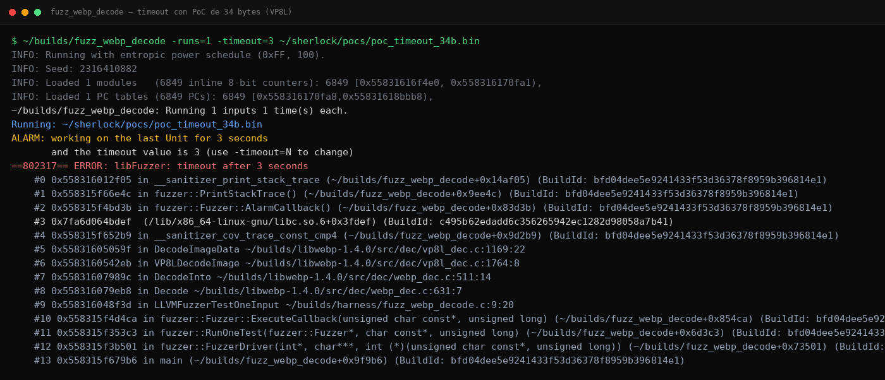
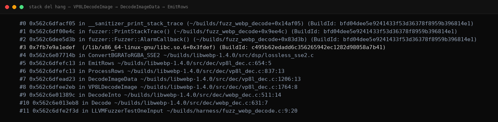

libwebp: DoS por Área de Imagen No Validada en el Decoder Lossless VP8L
Treinta y cuatro bytes. Eso basta para que un servidor de imágenes se pase segundos —o minutos— decodificando una foto que no existe. El decoder lossless de libwebp acepta declaraciones de hasta 16384×16384 píxeles sin comprobar el área total, justo el control que su hermano lossy sí aplica. Hallazgo del sistema autónomo Sherlock: un estudio de lo que ocurre cuando dos caminos de código que deberían ser gemelos no comparten las mismas reglas.
/índice_del_análisis +
00. Resumen Técnico
| Objetivo | libwebp 1.4.0 — decoder lossless VP8L (vp8l_dec.c) |
|---|---|
| Vulnerabilidad | Ausencia de validación de área de imagen (width × height) antes de asignar buffers y procesar filas |
| CWE | CWE-400 (Uncontrolled Resource Consumption) · VRT: recurso/CPU |
| Severidad | LOW — consumo de CPU, sin corrupción de memoria |
| Disparador | WebP lossless de 34 bytes declarando dimensiones gigantes (≤16384×16384) |
| Efecto | Decode con coste ∝ área declarada → timeout reproducible 3/3 con límite de 3 s |
| Causa raíz | ReadImageInfo (VP8LDecodeImage, vp8l_dec.c:1764) no consulta MAX_IMAGE_AREA; el path lossy sí lo hace |
| Validación | Doble herramienta: libFuzzer (timeout instrumentado) + timeout de shell como control independiente (exit 124) |
| Estado fix upstream | Sin parche conocido al cierre — divulgación graduada: mecanismo completo, receta byte a byte reservada |
01. Contexto: libwebp Está en Todas Partes
Cada navegador, cada CDN moderna, cada servicio de optimización de imágenes y cada app móvil que muestra fotos pasa por libwebp en algún momento. Su modo lossless (chunk VP8L) promete compresión sin pérdida rivalizando con PNG, y es precisamente el modo elegido para capturas, iconos y gráficos.
La historia reciente de la biblioteca —CVE-2023-4863 y su eco en libvpx— demostró hasta qué punto el ecosistema entero hereda sus bugs. Este hallazgo es más modesto en impacto pero igual de revelador sobre el proceso: la memoria de los CVEs pasados no garantiza que todos los caminos del código hayan aprendido la misma lección.
02. La Asimetría Lossy vs Lossless
El formato WebP tiene dos motores de decodificación: el predictivo con pérdida (VP8, heredado de WebM) y el entrópico sin pérdida (VP8L). Ambos terminan entregando píxeles al mismo cliente, pero nacieron de linajes distintos y eso se nota en sus defensas: el path lossy comprueba que el producto width × height no supere el límite razonable de la biblioteca (MAX_IMAGE_AREA) antes de comprometerse; el lossless lee anchura y altura del header y arranca sin preguntar cuántos píxeles implica esa multiplicación.
03. Anatomía: La Cadena que Nadie Frena
El recorrido desde la API pública hasta el bucle caro deja ver exactamente dónde se coló el agujero:
El check ausente tiene forma trivialmente conocida —el mismo patrón que su gemelo lossy ya aplica—:
Nótese el detalle de buen artesano que importa al corregir: la multiplicación debe hacerse en aritmética de 64 bits o con comprobación previa, porque 16384 × 16384 = 268.435.456 cabe justo en 32 bits —pero variantes con dimensiones máximas distintas podrían desbordar la propia comprobación. Los fixes apresurados que multiplican en 32 bits crean la siguiente generación de bugs.
04. El PoC de 34 Bytes
El archivo trampa sigue la anatomía mínima de un WebP lossless: cabecera RIFF con el chunk VP8L, y dentro de él, el bit de firma lossless seguido de los campos de anchura, altura y versión codificados en la tabla de bits inicial. Lo único que importa es la pareja dimensional: valores cercanos al tope permitido por el formato, cuya multiplicación produce cientos de millones de píxeles «virtuales» que el decoder intentará materializar fila a fila.
Al publicar este análisis no conocemos parche upstream aplicado. Publicamos el mecanismo, la cadena de llamadas y la estructura del archivo, pero no el binario ni el volcado hexadecimal completo: suficiente para reproducir, auditar y corregir, sin servir el disparador listo para usar.
05. Evidencia de Validación
Para un DoS temporal, la doble herramienta toma otra forma: el fuzzer instrumentado detecta el exceso de tiempo, y un control sin instrumentación —el clásico timeout(1) de shell— confirma que el hang pertenece al decode real, no al harness.


06. Acotación: Por Qué es LOW
- Sin corrupción de memoria: buffers se asignan correctamente según las dimensiones; el problema es cuánto tarda el trabajo declarado, no que escriba donde no debe.
- Límite estructural del formato: 16384×16384 acota el peor caso (~268M píxeles); no hay crecimiento indefinido como en un bucle infinito puro.
- Requiere contexto de servicio: un reproductor local pierde unos segundos; el daño serio exige un servicio que decode imágenes de terceros sin límites propios.
Más allá del impacto individual, este caso entrega al sistema una firma reutilizable: «comparar defensas entre paths gemelos». Donde dos implementaciones resuelven el mismo problema, cualquier control presente en una y ausente en la otra es candidato automático a hallazgo. Esa heurística ya está alimentando nuevas campañas de análisis.
07. Impacto Realista y Mitigación
El escenario de explotación natural es cualquier servicio que decodifique WebP subido por usuarios: plataformas que generan miniaturas, antivirus y DLP que reconstruyen imágenes para analizarlas, apps de mensajería que preprocesan stickers. Con concurrencia, cada archivo de 34 bytes ocupa un worker durante segundos; una cola pequeña de ellos degrada el servicio entero.
- Mantenedores: replicar el guardia de MAX_IMAGE_AREA del path lossy en ReadImageInfo, con multiplicación segura en 64 bits.
- Operadores: imponer límites en la capa de servicio —dimensiones máximas verificadas sobre el header antes de llamar a la librería, presupuesto de CPU por archivo, workers aislados con reinicio automático.
- Usuarios finales: riesgo prácticamente nulo en navegadores modernos, que ya limitan dimensiones antes de invocar al decoder.
08. Conclusión
Los sistemas grandes no fallan por ignorancia global sino por inconsistencia local: alguien aprendió la lección del área máxima en un camino del código y nadie la llevó al otro. Treinta y cuatro bytes son suficientes para notar la diferencia. La próxima vez que audites un parser con múltiples modos, compara sus modos entre sí —la lista de controles que uno tiene y el otro no suele leerse como una lista de hallazgos pendientes.
/Más hallazgos de la serie Sherlock
Siete vulnerabilidades confirmadas en un mes de caza autónoma con modelos locales de IA. Todos los análisis con evidencia y diagramas.
09. Referencias
- Especificación del bitstream WebP Lossless (formato VP8L)
- WebP — sitio oficial del proyecto
- MITRE CWE-400: Uncontrolled Resource Consumption
- libFuzzer — timeouts y slow units
- Sherlock: Caza Autónoma de Vulnerabilidades con Modelos Locales de IA (tty503.com)
- SAINT GRAIL Go: CRC Bypass en 7-Zip 9.20–25.01 (tty503.com)